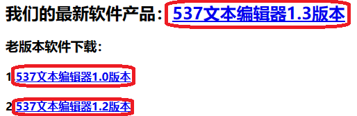
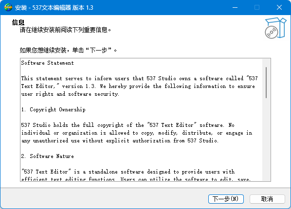
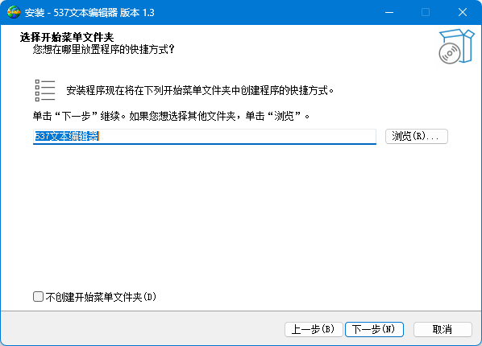
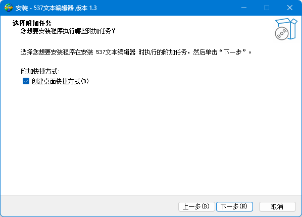
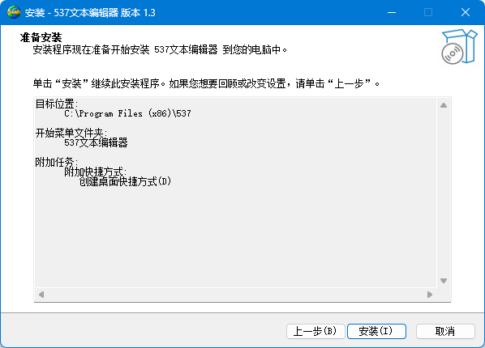
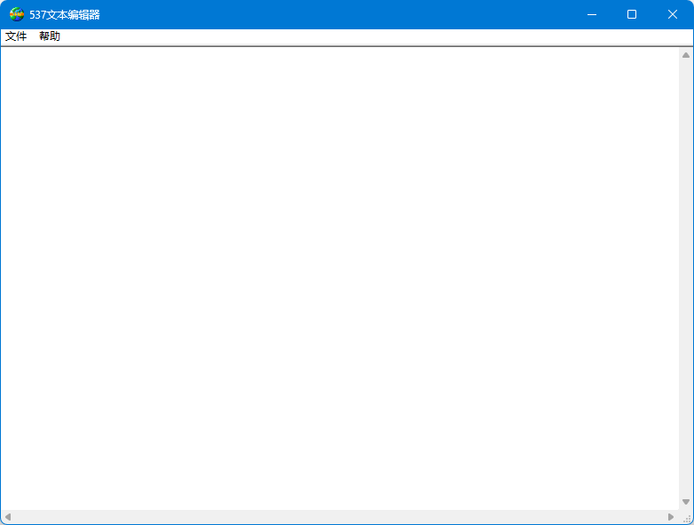

您好，欢迎来到537帮助-如何使用。
下载
首先请从本站下载软件安装包。

您可以忽视部分的浏览器警告，因为我们的软件是安全的。选择“保留”或“信任”，等待下载完成。
现在就下载完成了。
安装
运行下载的安装包。
在该界面选择安装程序语言。点击“确认”。

阅读提示文档，点击“下一步”。
选择安装位置，点击“下一步”。

选择是否创建开始菜单快捷方式。点击“下一步”。

确认安装组件。确认无误点击“安装”。

安装完成。
使用
我们可以通过点击快捷方式运行软件。这是软件的主页面。

“文件”栏里有最重要的“打开...”、“保存”和“退出”选项。
功能
打开...
点击会弹出一个打开文件的窗口，选择文件，点击窗口上的“打开”。
保存
点击会弹出一个保存文件的窗口，选择自己想要保存的路径，点击窗口上的“保存”。
退出
点击关闭软件。
“帮助”栏里有“帮助”和“关于...”选项。
功能
帮助
点击会弹出一个对话框，显示官网链接和开发者有效邮箱。
关于...
点击会弹出一个对话框，显示软件信息。
其它问题可以发送到本邮箱：
wushaoquan666@outlook.com